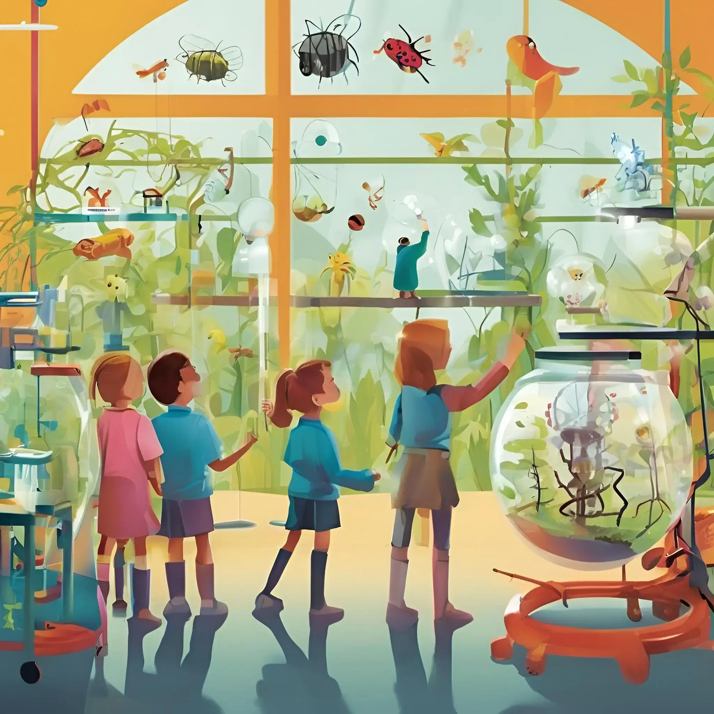

Education
About Our Educational Program
At the Community Science Museum, our Educational Program is designed to ignite curiosity and foster a love for learning in students of all ages. Whether you're 7 or 14, you’ll have the chance to dive into exciting hands-on activities that make science come alive. From building rockets to exploring the wonders of space, our programs cover a wide range of topics, including biology, physics, engineering, and more. With interactive exhibits and creative workshops, we make complex scientific concepts fun and easy to understand, turning every visit into an unforgettable adventure.
Our educational offerings also provide great opportunities for teachers looking to enhance their classroom experience. We offer tailor-made field trips, where students can engage with exhibits that complement their curriculum, making science more relatable and exciting. Teachers can also take advantage of our teacher-led workshops, where they’ll receive lesson plans and activity guides that align with national science standards. These workshops provide valuable resources that educators can incorporate into their own classrooms, allowing them to extend the learning beyond the museum walls.
For schools looking to deepen their students' scientific knowledge, we also provide specialized programs such as STEM camps and after-school clubs. These programs focus on hands-on learning and problem-solving, offering students a chance to design their own projects, conduct experiments, and work as a team. Whether it’s a one-time field trip or a series of ongoing workshops, the Community Science Museum is here to support educators and help students explore the exciting world of science in a way that’s both fun and educational.
What We Offer
Interactive Field Trips: Explore Science Up Close
Bring your class to the Community Science Museum for an engaging, hands-on learning experience. Our interactive field trips allow students to explore exhibits on space, dinosaurs, technology, and more, all while aligning with educational standards. Teachers will receive a guided tour tailored to their grade level, with opportunities for students to engage in experiments and activities that reinforce classroom learning.
ApplySTEM Workshops: Building the Future

Our STEM workshops offer teachers a unique opportunity to introduce students to the world of engineering, robotics, and technology. With activities like building robots, coding simple games, and creating renewable energy solutions, students will gain practical skills while learning about the science behind the tools shaping our future. Workshops are designed to be interactive and can be customized to fit your curriculum needs.
ApplyDinosaur Dig: Paleontology in the Classroom

Take your class on a paleontological adventure with our Dinosaur Dig workshop! Students will work together to uncover fossil replicas in a hands-on excavation experience. This program also includes lessons on how fossils are formed and what they tell us about prehistoric life. Ideal for Earth science and history teachers, this workshop provides a fun way to explore the mysteries of the past.
ApplySpace Exploration Camp: Journey to the Stars

Let your students blast off on a journey through space with our Space Exploration Camp. This immersive program includes activities such as building rockets, learning about the solar system, and exploring how astronauts live and work in space. The camp encourages teamwork and critical thinking, offering a perfect blend of science education and fun, and is tailored for both elementary and middle school levels.
ApplyEnvironmental Science: Eco-Explorer Program
Help your students become environmental stewards with our Eco-Explorer Program, designed to teach kids about sustainability, renewable energy, and conservation. Through hands-on activities like creating mini solar-powered cars or learning about plant biology, students will discover how their actions impact the environment and how they can make a difference. This program is perfect for science and social studies teachers.
ApplyScience in Action: Classroom Demonstrations
Bring the museum to your classroom with our Science in Action demonstrations! Our expert educators will visit your school and conduct live science experiments that tie directly into your curriculum. From chemistry explosions to physics experiments, these demonstrations will captivate your students and deepen their understanding of scientific principles in a fun and memorable way.
Apply